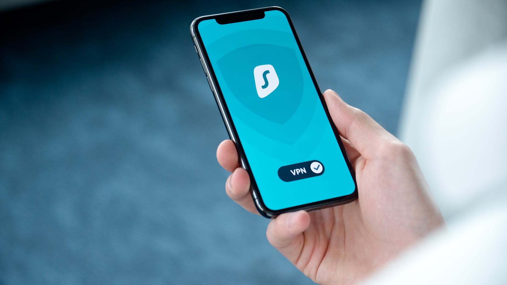
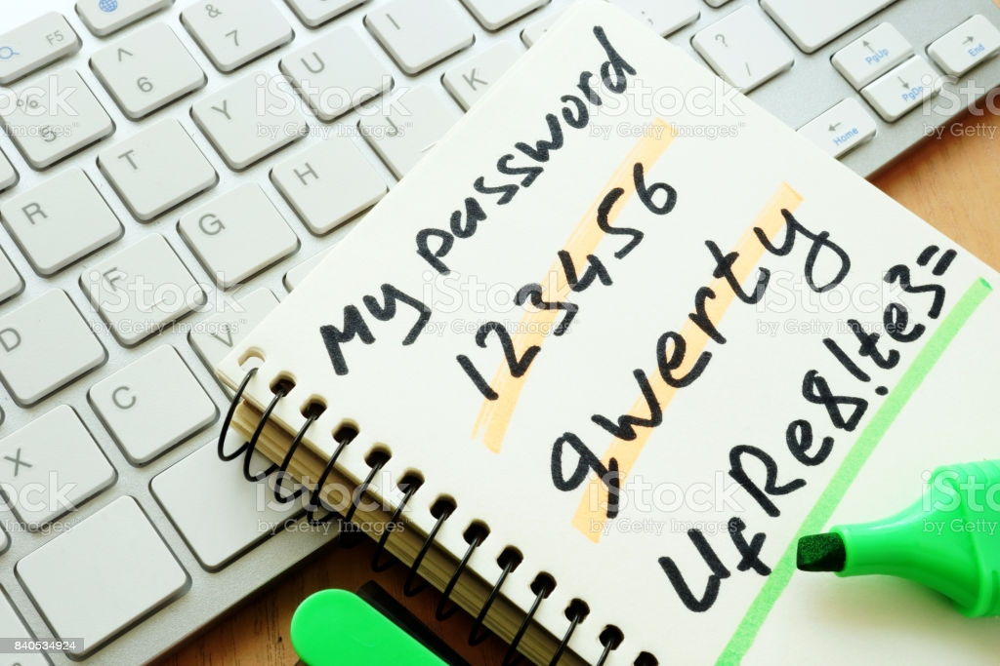

Online Security
Published by: Anxhela Mehmetaj
Privacy is constantly invaded by sites you visit, your ISP, your Government and even the services that you use like Google and Facebook. They sell your data to third-party marketers.
Zone 1: Easy Basic Privacy
Password
Use strong password. Secure password on: Link. Never answer security questions online.Create a password inside your password manager. Don't use pins. Nothing biometrics. No voice activated. No fingerprint activated
Virtual Private Network
Having a VPN is essential to being secure. VPN hide your identity on the website you visit. and any other person trying to track you. Vpn also encrypted traffic. Stay away from free VPNs and try to avoid proxies.
Social Media
- Hide Real Information
- Do not talk to strangers
- Don't post on public comments
- Disable permissions
- Obfuscated pictures
Phone Number
When the phone number is required create a Google account with false information using a VPN and then use google voice or Google Hangouts as a secondary number which is unattached to your personally and use this number for your accounts online so, do not need to give phone numbers to strangers for whatever reasons they want it. Use AI number which gives you a new phone number to create false online accounts.
Mobile Phone & Computer Security:
- Activate VPN
- Disable Location
- Disable Bluetooth
- Remove Unused Apps
Zone 2: Communication
Texting is completely insecure.Facebook messenger aren't much better at keeping your data secure and it might be worse.The best solution is to either use IMessage which only works in Apple devices or signal. Signal is the most secure messenger, it's open sourced. Everything on there it's fully encrypted and you can make sure only the person you are texting can view your messages.
Email providers invade your privacy. Protonmail is completely secure email. It's open source, offers end-to-end encryption, the same as signals.
Switch Email Provider:
- Forwards emails to new service
- Modify websites to use new email
Web browser: Stick with Firefox than Chrome since Google is very known to collect your data.Use browser extension wise to make sure you have you block origin of privacy oriented ad blocker privacy. Use HTTPS rather HTTP
Zone 2: Your Computer OS
Most Secure OS:
- Windows Host OS
- OS X Host OS
- Linux Guest OS on Either Host.
- Linux Host OS
Zone 3: Passwords
Password protect bios as well as storage drives. begin the operating system by typing a password in it.
Ditch Google!
Google is undeniable one of the largest data collectors in existence. Google is all about convenience and in one location. Go to Google activity center where you will find all the information.
Tor browser bundle is a browser that will encrypt you traffic and mask your IP address. This makes a traffic unable to sniffed or searched even by your ISP. The goal is to get rid of any browser outside of towards.Tors built off of firefox. For Android device get Orbot to connect to the Tor network and Orfox as your browser if you